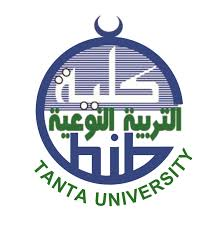

أ.د. رانيا الإمام
عميد كلية التربية النوعية جامعه طنطا
تجمع هذه الصفحة أسماء المشرفين والطلاب والطالبات والقيادات الأكاديمية المرتبطة بالمشروع، تأكيدًا على أن HandSpeak عمل جامعي متكامل قائم على جهد جماعي منظم. كما تعكس هذه الصفحة البعد الإنساني للمشروع، لأن كل نتيجة ظهرت فيه كانت ثمرة تعاون مشترك ورؤية جماعية واضحة.

عميد كلية التربية النوعية جامعه طنطا
رئيس قسم تكنولوجيا التعليم
هذا المشروع لم يكن نتاج فرد واحد، بل هو نتيجة تعاون منظم بين فريق متكامل جمع بين المهارات التقنية والرؤية الإبداعية والإشراف الأكاديمي، مما ساهم في تحويل الفكرة إلى نظام عملي قابل للتطبيق.
تم تطوير المشروع داخل بيئة جامعية منظمة، تحت إشراف أكاديمي متخصص، مما يعكس التزامه بالمعايير العلمية ويعزز من مصداقيته كحل تقني مبني على أسس بحثية واضحة.